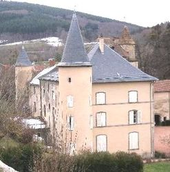
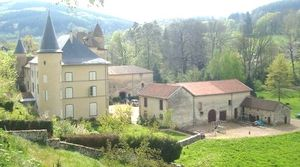
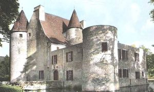
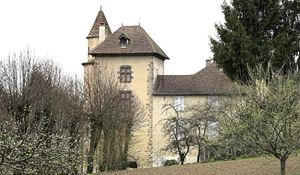
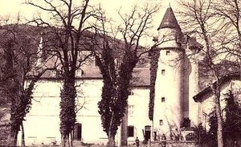
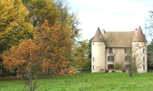
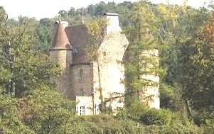
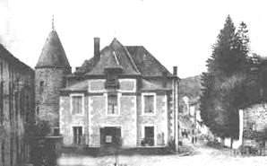

Recensement Jean-Claude Truffet
| Département | 03 — Allier |
| Canton | Mayet-de-Montagne |
| Commune | Ferrières-sur-Sichon |
| Type d'édifice | Château |
| Période d'origine | XV |








Trois châteaux à Ferrières sur Sichon; celui de Ferrières du XVIe siècle avec donjon, de Chappes du XI-XVIIe siècle avec douves et de Montgilbert (Vestiges voir article). CHAPPES, les plus anciens propriétaires du fief furent Pierre et Philippe de Terrières, écuyers. Etait en indivis entre Anne de Terrières, avocat au parlement, et Claude de Chalençon de Rochebaron, en 1659 il est aux mains d'Antoinette Arnoux de Saint-Simon, passe à son fils Charles de Chandieu, puis à Paul de Loriol qui le vend en 1720 à la famille de Manissy. Par la suite; les Sicard de Rama, les Sauret, les Rollat, les Degeorges, les La Code d'Aigueperse. il est actuellement à la famille Barge qui l'habite et l'entretient. FERRIERE occupait au Moyen-Age une position stratégique. Le premier seigneur connu de Ferrières est en 1249, Gaucher de Châtillon connétable de France. Les Châtillons, seigneurs de Ferrières. En 1454, ce sont Louis de Beaufort et Jehanne de Norry, sa femme, qui possèdent les terres et châteaux de Gaffier et Ferrières. Le fief de Ferrières fut vendu à plusieurs reprises au début du XVIIIe siècle, en 1720, au seigneur de Châteldon pour l'acquérir, mais il est revendu en 1756 à Jean Claude Douet, fermier général. Au cours du XIXe siècle devenu la propriété du vicomte le Jeans.
Chappes, cette demeure féodale du XVe siècle comprend un quadrilatère de trois étages plus comble, contourné à l'origine de quatre tours rondes à toit pointu au Nord-Est et au Sud-Est et de celle de l'escalier à l'Ouest, les deux tours ouest ayant disparu, le tout entouré de douves pleines d'eau que l'on franchit par un pont dormant accès à la cour intérieure sur laquelle s'ouvre la porte d'entrée encadrée de fines moulures ogivales. Ferrières-sur-Sichon possède un donjon qui occupait au Moyen-Age une position stratégique, en limite des territoires du Bourbonnais, de lAuvergne et du Forez, que les Bourbons ont acquis petit à petit, ce qui explique la construction des châteaux forts de Pyramont, de Montgilbert, de Chappes en plus de celui édifié au centre du bourg. Ferrières-sur-Sichon était très peuplée jusquen 1880, date à laquelle furent créés les bourgs de Lavoine et de La Guillermie. Dans la commune maison forte de la Roche ou château, date du XVe siècle, il fut érigé lors des constructions défensives dans le Bourbonnais, sur un plan rectangulaire, avec des combles hauts et une tourelle d'escalier à demi à l'extérieur, distribuant les 2 salles des étages.
Les salles sont équipées de cheminées en pierre à manteau mouluré, et de fenêtres qui lui donnent son caractère résidentiel.
Famille de Manissy"
Château de Ferrière sur Sichon, de Chappes et la maison forte de la Roche